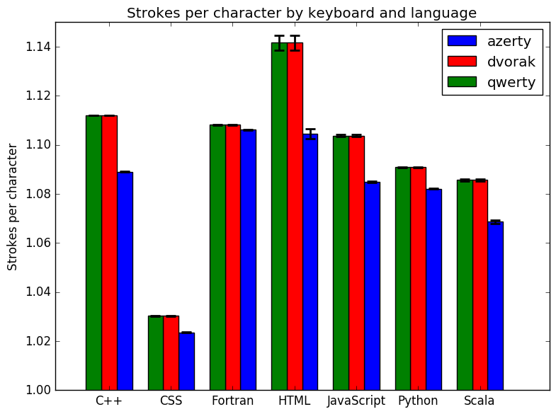
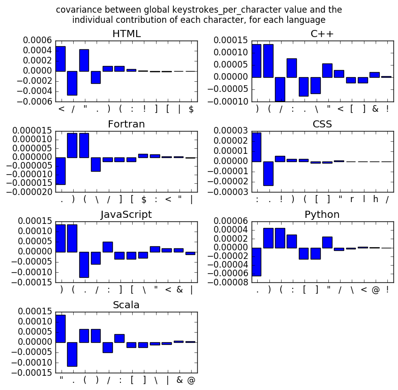
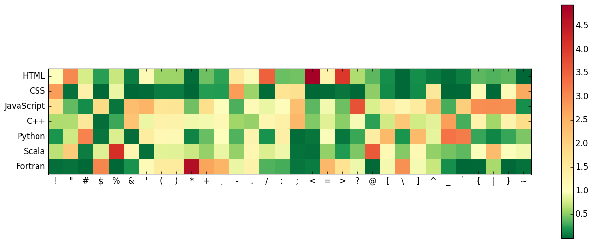
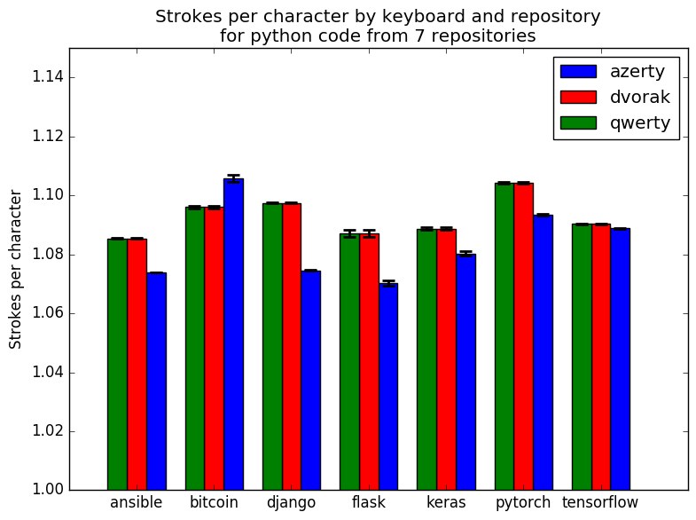

Which keyboard layout is best suited for programming?
AZERTY vs QWERTY vs DVORAK Jan 12, 2019
When I started to make heavy use of the Python library pandas on an AZERTY keyboard a few years ago, I hated how many square brackets I had to type. The '[' and ']' characters require three keystrokes (alt + shift + 5) on an AZERTY Mac keyboard, and pandas uses them extensively. Of course, this can easily be dealt with by key mapping, but it still made me wonder.
Some languages use a lot of curly brackets, others use square brackets, others end every line with a semicolon... Some keyboard layouts need up to three keystrokes to type characters that take only one stroke in other layouts (for example, '\' is three keystrokes on AZERTY/Mac and one on QWERTY/Mac). So which language/keyboard combinations take the most and the least strokes to code on average? Here's the answer, based on the analysis of a few million lines of code.
Keyboard layouts considered: QWERTY/Mac/Canadian, AZERTY/Mac/French - numerical (i.e. with a numerical keypad), DVORAK/Mac. For each layout, I created a dictionary with the number of keystrokes needed to type each character on that keyboard.
Code samples are from github. Whitespace was excluded. All code was lowercased. Comment lines were not excluded.
From each repo, for each language, I used only those files with the appropriate file extension, since most projects will contain a mixture of different languages. Of course this doesn't give perfectly pure code samples, since some bad, bad people like to mix up several languages within one file, e.g. JavaScript or even CSS in HTML files. I didn't go to the point of trying to detect the presence of multiple languages within one file, although this is quite easy to do using e.g. naive Bayes classifier. So just bear in mind that some of the analysis may be polluted, particularly HTML by JavaScript.
| Language | Github repositories | Total file size (in millions of characters) |
|---|---|---|
| C++ | tensorflow/tensorflow, pytorch/pytorch, tesseract-ocr/tesseract, bitcoin/bitcoin | 49.4 |
| Python | tensorflow/tensorflow, keras-team/keras, django/django, pallets/flask, ansible/ansible, pytorch/pytorch | 64.4 |
| HTML | HackerThemes/theme-machine, cypress-io/cypress-example-kitchensink, whatwg/html | 0.2 |
| CSS | HackerThemes/theme-machine, cypress-io/cypress-example-kitchensink, whatwg/html | 13.4 |
| JavaScript | facebook/react, tensorflow/tfjs, vuejs/vue, cypress-io/cypress-example-kitchensink, domchristie/turndown | 6.2 |
| Fortran | Reference-LAPACK/lapack, josephalevin/fson | 28.3 |
| Scala | Azure/mmlspark, snowplow/snowplow | 2.4 |
Average number of keystrokes per character
Note: y-axis starts at 1, not 0. Error bars are the Student's t distribution 95% confidence interval, via block averaging after random shuffling of the complete code string for each language.
Surprisingly, among the keyboard layouts, AZERTY requires the lowest amount of keystrokes in all cases. At least, it was surprising to me. It's obvious that the common Unix shells were written by people using QWERTY keyboards, with the frequent use of combinations such as './' or '~/' in the shell. On a US QWERTY keyboard, '.' and '/' are right next to each other, and only require one keystroke each. On the Central European QWERTZ keyboard, for example, they are far apart and require three keystrokes in total. I had always assumed that most programming languages were similarly created to be easy to type on a QWERTY keyboard, but we can only speculate on which keyboard layout was used by the original developers of each language, and whether they consciously or subconsciously favoured characters that were easier for them to type.
Meanwhile, among the programming languages, CSS is by far the language needing the lowest amount of keystrokes to type, mostly using characters which take only one keystroke to type.
Let's take a look at the main explanatory factors behind these observed differences.
Which characters cause most of the differences between keyboards layouts?
The characters which cause the largest differences in keystroke_per_character value across keyboard layouts for a given language will be those characters which both (1) occur frequently in the given language and (2) require different number of keystrokes in different keyboard layouts.
To identify these, we use the covariance between the vector of keystroke_per_character values for the three layouts and the vector of contributions of each individual character to those values, i.e. relative frequency of the character in the given language times number of keystrokes for that character with the given keyboard layout. (Note: it's covariance and not correlation because we need to capture the magnitude of the effect, not only its existence. The correlation coefficient does not depend on the frequency of each character in each language.)
Since QWERTY and DVORAK keyboards have such similar keystroke_per_character values, in the above graphic we're mainly seeing the difference between AZERTY and the two other layouts. Bars with large positive values are those characters which appear frequently in the given language and which are quicker to type on an AZERTY keyboard, while bars with large negative values appear frequently but require more keystrokes on AZERTY.
Although there are a mixture of positive and negative contributions, the positive contributions win out, and typing with an AZERTY keyboard is faster for all programming languages considered.
In other words, even though '.', and '/' require 2 keystrokes on an AZERTY keyboard, and '\', '[' and ']' require 3, this is more than balanced out by the fact that characters such as '(', ')' and ':' only require 1.
Which characters cause most of the differences between languages?
The above heatmap shows the frequency of each character in a given language, relative to its frequency in other languages. For example, the semicolon ';' is almost entirely absent in Python, Scala and Fortran, whereas of course in JavaScript, CSS and C++ it is the termination character. It also occurs ocasionally in HTML, presumably in HTML entity codes. '*' is used in Fortran far more than in any other language (it occurs in read and write statements in Fortran). Although '*' also occurs in C++ in pointer declaration and dereferencing, it is relatively much less frequent than in Fortran.
Dependence on source code used?
More than 2 million lines of code were used in this analysis, but that's still only a limited number of different repositories. Results will course be very dependent on the particular repos chosen, style guides used by the authors of each package, the repos' functionality, etc. For example, Python code that makes heavy use of the pandas package will contain far more square brackets than Python code that uses mostly numpy. Javascript that uses jQuery will contain the '$' character with a much higher frequency than vanilla JS. (Note however that the choice between camel case (myVariable) and snake case (my_variable) has no impact, because the underscore is a two-stroke key in all the keyboard layouts considered.)
To get an idea of the possible variance arising from the choice of a limited number of repositories, here are the results of the calculation performed separately on each of the ten Python repositories (two web frameworks, an automation tool, a library for bitcoin transactions, and three machine learning/deep learning libraries).
Bitcoin is actually worse with AZERTY than the other layouts because it makes more extensive use of '[', ']' and '#' than the other projects, all of which require 3 keystrokes on an Mac AZERTY keyboard.
Final remarks
I had the impression that AZERTY keyboards were less well suited to programming than QWERTY or DVORAK, but I was wrong. In fact, the opposite is true, in all languages looked at here. AZERTY keyboards require up to 3% less keystrokes per character than QWERTY or DVORAK.
This is because of the relative frequency of the various punctuation characters. Even though '.', and '/' require 2 keystrokes on an AZERTY keyboard, and '\', '[' and ']' require 3, this is more than balanced out by the fact that characters such as '(', ')' and ':' only require 1.
Note that here we're only looking at the number of keystrokes per character, not the total number of characters needed to encode a certain functionality. Obviously this doesn't vary with keyboard layout, but it does vary with programming language. As anyone who's ever written tons of painful boilerplate code will know, some languages need many more characters than others to write the same program. That's a question I haven't addressed at all here. To look at this, one could maybe scrape Wikipedia for implementations of the same algorithm in multiple languages.
In any case, obviously the important thing to do is to use key mappings and IDEs with code completion to reduce typing and increase coding efficiency to a maximum, and then you don't care any more which keyboard layout you're using!